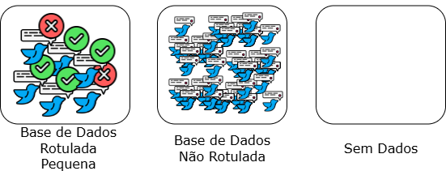
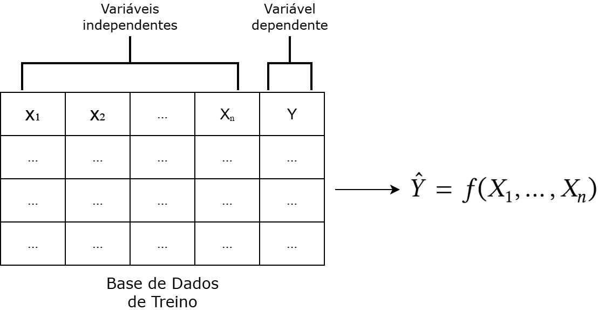
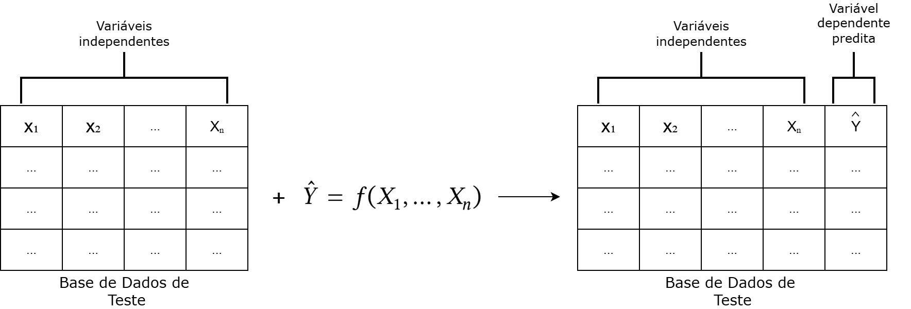
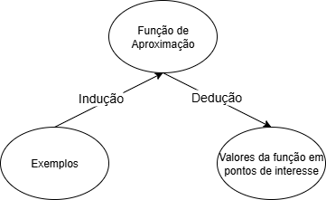
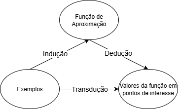
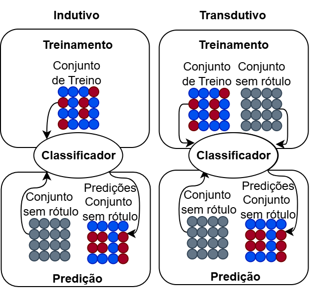
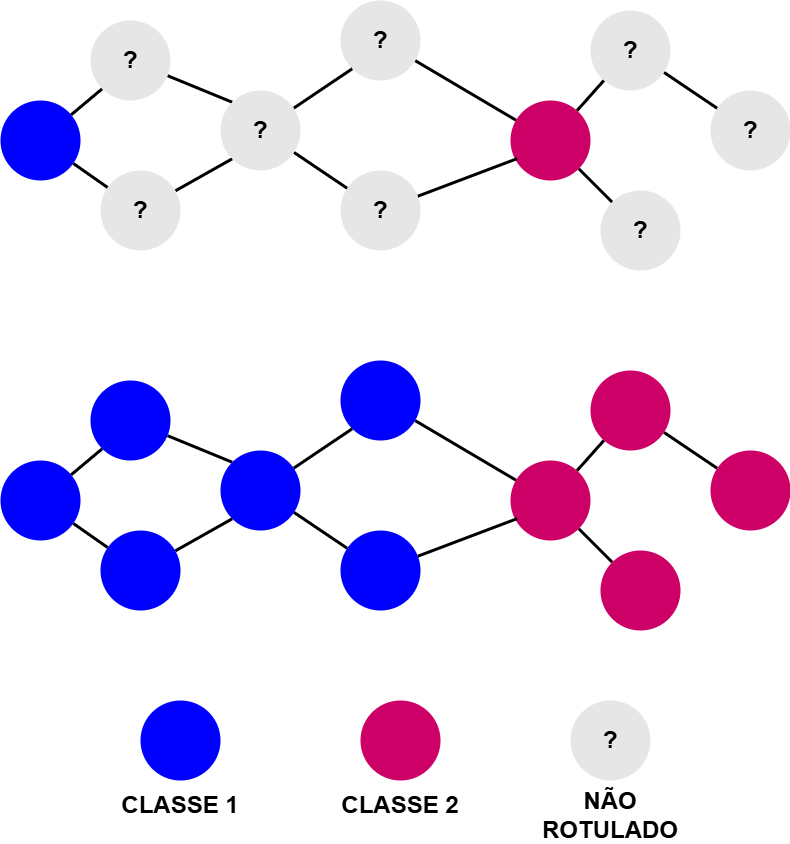
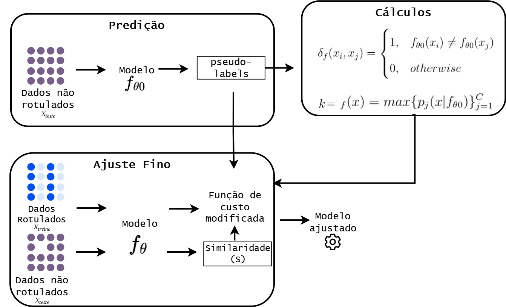

17 Aprendizado Transdutivo em PLN
17.1 Introdução
Suponha que você deseja avaliar como um determinado comportamento linguístico influencia alguma tarefa. Tal avaliação pode ser, por exemplo, como o conteúdo de notícias influencia o resultado de determinada empresa, como comentários em uma rede social influenciam a popularidade de uma pessoa, ou mesmo como resenhas em um sítio de comércio eletrônico influenciam vendas futuras de um determinado produto.
Nesse sentido, uma das primeiras decisões a serem tomadas é o que corresponde ao seu conjunto de dados, seu corpus (Capítulo Conjunto de dados, dataset e corpus). Serão notícias? Textos de plataformas de microblogging? Textos científicos? Comentários feitos por usuários? Enfim, há uma infinidade de opções. Uma vez definido com o que se deseja trabalhar, há que se explicitar o que se deseja identificar nesses dados. A polaridade do texto como um todo? A estrutura sintática de cada sentença que compõe o texto (como exemplificado no Capítulo Ferramentas e recursos para o processamento sintático)? Veja que, a depender do que se deseja identificar, a unidade básica de anotação, ou seja, a menor porção do texto à qual será atribuído um rótulo, é também definida.
Sabendo já que fenômenos e quais tipos de dados são de interesse, resta definir sua fonte, ou seja, iniciar a busca de tais dados. Se você conseguir uma base de dados que seja grande o suficiente para seus propósitos, além de já estar anotada com o fenômeno de interesse, considere-se uma pessoa de extrema sorte. Infelizmente, como toda sorte extrema, ela também é rara. Então o mais comum é você se deparar com nada ou, na melhor das hipóteses, com um corpus já coletado, mas não anotado com o que interessa a você.
Que fazer então? Se o corpus existir e for de uso público, simples... obtenha-o. Mas, e se não existir? Então você deve criá-lo, seja via crawlers de internet, seja por geração automática ou crowdsourcing. Veja que você já não tirou a sorte grande, ou seja, seu corpus não está perfeitamente ajustado aos seus interesses. Nesse caso, você se encontra em uma das seguintes situações, ilustradas na Figura 17.1:
Você conseguiu um corpus anotado, mas de tamanho insuficiente ou parcialmente anotado;
Você conseguiu um corpus de tamanho suficiente, mas não anotado; ou
Você ficou sem nada nas mãos (seu pior pesadelo!).

Como exemplo, imagine que você se interessa por uma tarefa de classificação de tweets. Nesse caso, todas as situações acima são possíveis de acontecer, vista a popularidade desse tipo de dado. No primeiro caso, você pode ter tido sorte e encontrado uma base de dados anotada com os rótulos do seu interesse (por exemplo, a base de dados DANTEStocks, descrita em (Di Felippo et al., 2024)). No segundo caso, você pode ter encontrado a base de dados ou implementado um crawler pra coletar os tweets da sua preferência, mas os rótulos não existem. No pior cenário, você não possui nem mesmo os tweets de interesse.
No caso de haver um corpus anotado disponível, mas pequeno, uma possibilidade é ampliá-lo, coletando mais dados de modo a formar assim um corpus grande o suficiente, mas parcialmente anotado (a parte correspondente ao corpus originalmente anotado). O segundo caso já exige que você anote os dados como um todo, o que pode ser uma tarefa extremamente custosa e demorada (Alzubaidi et al., 2023; Zhu et al., 2009). O terceiro caso une o pior dos mundos: você terá que construir o corpus do zero e então anotá-lo.
Que fazer? Se sua sorte não estiver tão ruim, é possível que existam ferramentas para anotação automática do corpus, como as descritas no Capítulo Ferramentas e recursos para o processamento sintático. Restaria então analisar uma amostra dessa anotação para se obter uma estimativa do desempenho da ferramenta em seu corpus. Agora, se você não tiver acesso a uma ferramenta, é possível anotar parte do corpus, de tamanho tal que a anotação possa ser feita dentro de um prazo e custo aceitáveis, e então apelar a métodos de aprendizado semi-supervisionado e, mais especificamente, ao aprendizado transdutivo, usando-os para incorporar os dados não rotulados ao processo de treinamento dos modelos supervisionados usados em seu projeto.
17.2 E o que seria esse tal de aprendizado transdutivo?
Para entender o aprendizado transdutivo, é necessário antes entender a diferença entre dedução e indução como formas de inferência, e como essas são usadas dentro do aprendizado supervisionado (ver (Russell; Norvig, 2009)). Na indução, uma relação (em geral, uma função) entre variáveis é derivada a partir dos próprios dados (Vapnik, 2000). Assim, ao vermos, por exemplo, determinados valores para um conjunto de variáveis \(\{X_1, \ldots, X_n\}\) em conjunção com determinados valores para uma variável \(Y\), induzimos uma relação \(\hat{Y} = f(X_1, \ldots, X_n)\) entre elas1, conforme ilustra a Figura 17.2.

Na dedução, por sua vez, partimos de uma relação pré-definida entre as variáveis para, a partir do valor de uma ou mais variáveis, inferir o valor de alguma outra variável de interesse para um determinado ponto ou conjunto de pontos (Vapnik, 2000). Ou seja, a partir da relação \(\hat{Y} = f(X_1, \ldots, X_n)\), e do conhecimento do valor de \(\{X_1, \ldots, X_n\}\), deduzimos o valor de \(Y\) ou, no caso, apresentamos uma estimativa \(\hat{Y}\) para \(Y\) (Figura 17.3).

Em conjunto, indução e dedução formam a base do treinamento de modelos supervisionados. Ao treinarmos, olhamos os dados e induzimos uma relação \(\hat{Y} = f(X_1, \ldots, X_n)\) entre eles. Para verificar a plausibilidade de nossa indução, aplicamos f() aos valores de \(\{X_1, \ldots, X_n\}\) em pontos não vistos – o conjunto de teste (Figura 17.4). Se a função induzida for uma estimativa boa, então seu resultado deve ficar próximo, dentro de uma segurança estatística, do valor de \(Y\) nesses novos dados. Essa é a parte da dedução.

Fonte: Adaptada de (Vapnik, 2000, p. 293).
Certo, mas e a transdução, onde ela entra nisso? A transdução é uma forma de inferência que, assim como a dedução, infere o valor de uma variável de interesse em um determinado conjunto de pontos. Diferentemente da dedução, contudo, ela não parte de uma relação entre variáveis, fazendo essa inferência diretamente a partir dos dados iniciais (Vapnik, 2000). Assim, nenhuma relação geral é buscada, como na indução, mas apenas uma estimativa \(\hat{Y}\) do valor da variável alvo \(Y\) para os pontos específicos de interesse (Chapelle et al., 2006), conforme ilustra a Figura 17.5.

Fonte: Adaptada de (Vapnik, 2000, p. 293).
17.2.1 Transdução como forma de aprendizado
No contexto apresentado, o aprendizado transdutivo, conforme proposto por Vapnik2 (Gammerman et al., 1998; Vapnik, 1998), surge como uma alternativa ao aprendizado supervisionado, ao permitir que o modelo treinado utilize diretamente os dados não rotulados do conjunto de teste durante o processo de treinamento, com o objetivo de melhorar seu desempenho especificamente nesse conjunto (Zhu et al., 2009). Dessa forma, enquanto o paradigma indutivo busca aprender uma função generalizável a partir dos dados de treinamento para ser aplicada a quaisquer novos exemplos, o aprendizado transdutivo se concentra em prever somente os rótulos dos exemplos específicos não rotulados disponíveis no momento do treinamento (Chapelle et al., 2006; Zhu et al., 2009), construindo uma espécie de “atalho” entre os passos do aprendizado indutivo clássico, conforme ilustrado na Figura 17.6.

Formalmente3, o aprendizado transdutivo parte de um conjunto de \(m\) instâncias:
\[S = \{s_{1}, s_{2}, \ldots, s_{m}\}\]
e de uma coleção de \(m\) vetores de características \(X\), em que cada \(x_i \in X, 1 \leq i \leq m\) é associado à sua instância correspondente \(s_i \in S\):
\[X = (\mathbf{x}_{1}, \mathbf{x}_{2}, \ldots, \mathbf{x}_{m})\]
A partir de \(X\), definem-se dois subconjuntos, \(X_{\text{treino}} = (\mathbf{x}_{tr_1}, \mathbf{x}_{tr_2}, \ldots, \mathbf{x}_{tr_r})\) e \(X_{\text{teste}} = (\mathbf{x}_{ts_1}, \mathbf{x}_{ts_2}, \ldots, \mathbf{x}_{ts_n})\), em que \(X_{\text{treino}}\) corresponde ao conjunto de \(r\) instâncias cujos rótulos são conhecidos, e \(X_{\text{teste}}\) corresponde ao conjunto de \(n=m-r\) instâncias não rotuladas na base, de modo que \(X = X_{\text{treino}} \bigcup X_{\text{teste}}\).
Ao conjunto de treino \(X_{\text{treino}}\) associamos seus rótulos \(Y_{\text{treino}} = (y_{tr_1}, y_{tr_2}, \ldots, y_{tr_{r}})\) correspondentes, tais que cada rótulo \(y_{tr_i} \in Y_{\text{treino}}\), onde \(1 \leq i \leq r\) está associado a seu respectivo \(\mathbf{x}_{tr_i} \in X_{\text{treino}}, 1 \leq i \leq r\). Durante o processo de aprendizado, o método transdutivo utiliza esses conjuntos para inferir os rótulos \(\hat{Y}_{\text{teste}} = (\hat{y}_{ts1}, \hat{y}_{ts2}, \ldots, \hat{y}_{ts_{n}})\) dos exemplos de teste.
O aprendizado transdutivo é, de fato, um caso particular de aprendizado semi-supervisionado (Chapelle et al., 2006; Zhu et al., 2009) em que o foco é exclusivamente rotular corretamente os exemplos não rotulados conhecidos durante o treinamento, sem a preocupação de generalizar para dados futuros desconhecidos. Essa característica o torna especialmente atrativo em contextos de PLN nos quais temos uma base com poucos dados rotulados e muitos dados não rotulados, como em tarefas de anotação e construção de corpora. Essa abordagem pode então ser utilizada tanto para gerar uma base inteiramente rotulada quanto para incorporar exemplos não rotulados ao processo de treinamento supervisionado.
Do ponto de vista de aplicação prática, o aprendizado transdutivo pode ser entendido como uma estratégia viável para situações em que:
O conjunto de dados de teste é conhecido no momento do treinamento;
Não há interesse em inferência fora desse conjunto específico;
A rotulação manual do conjunto completo seria inviável ou muito custosa.
17.3 Aplicações do Aprendizado Transdutivo em PLN
A aplicação do aprendizado transdutivo em tarefas de PLN tem se mostrado promissora em diversos contextos. Entre as abordagens mais comuns estão o uso de modelos com a propagação de rótulos e a adaptação de modelos supervisionados tradicionais para permitir o aprendizado transdutivo.
17.3.1 Métodos baseados em propagação de rótulos
Métodos baseados em propagação de rótulos têm como objetivo utilizar os rótulos de exemplos previamente anotados para inferir pseudo-rótulos em exemplos não rotulados (a transdução). Essa inferência possibilita que os dados originalmente não rotulados possam ser incorporados ao treinamento de modelos supervisionados, tornando-se especialmente útil em cenários com baixa disponibilidade de dados anotados manualmente (Iscen et al., 2019).
Uma classe importante de métodos para propagação de rótulos são os baseados em grafos, como representado na Figura 17.7. Nessa abordagem, os dados (instâncias rotuladas e não rotuladas) são representados como nós de um grafo, enquanto as arestas indicam a similaridade entre pares de exemplos. Essa similaridade pode ser definida com base tanto em embeddings, quanto em medidas léxicas ou representações contextuais. A partir dessa estrutura, os pseudo-rótulos podem ser atribuídos aos nós não rotulados por meio de algoritmos que propagam a informação dos rótulos ao longo do grafo, respeitando a estrutura local de vizinhança.

Entre os algoritmos mais utilizados para esse tipo de abordagem, destacam-se a propagação de rótulos (label propagation) propriamente dita e o espalhamento de rótulos (label spreading). A propagação de rótulos baseia-se em um processo iterativo de disseminação de rótulos ao longo da estrutura do grafo, até que a convergência seja atingida. Esse processo consiste dos seguintes passos (Needham; Hodler, 2019), detalhados no Algoritmo 17.1:
Inicialização: cada nó da rede recebe inicialmente um rótulo único. Alternativamente, podem ser usados rótulos iniciais (seeds) previamente definidos.
Propagação: os rótulos se propagam através das conexões da rede, passando de um nó para seus vizinhos.
Atualização: a cada iteração, cada nó atualiza seu rótulo com base nos rótulos dos vizinhos. O novo rótulo é então definido como sendo o rótulo apresentado pela maioria dos nós vizinhos (um voto de maioria). Alternativamente, pode-se dar pesos diferentes aos vizinhos, conforme sua similaridade no grafo.
Convergência: o processo se repete até que todos os nós adotem o rótulo mais comum entre seus vizinhos. Com isso, grupos de nós densamente conectados tendem a atingir rapidamente um consenso sobre um mesmo rótulo, formando comunidades distintas na rede.
O espalhamento de rótulos, por sua vez, consiste de uma variante suavizada da propagação de rótulos, em que são introduzidas regularização e suavização nos rótulos atribuídos, permitindo uma propagação mais controlada e robusta, conforme detalhado no Algoritmo 17.2. Embora os algoritmos de propagação de rótulos e espalhamento de rótulos sejam similares na forma como propagam rótulos pelo grafo, a principal diferença está na regularização aplicada. No modelo do Algoritmo 17.2, é utilizada uma matriz Laplaciana normalizada e um parâmetro de controle \(\alpha\) para suavizar a propagação, garantindo maior estabilidade e robustez contra rótulos ruidosos, enquanto que no Algoritmo 17.1 é realizada uma atualização direta usando a matriz de graus sem esse mecanismo de suavização.
Essas técnicas transdutivas baseadas em grafos são especialmente relevantes em tarefas como classificação de documentos, análise de sentimentos, categorização de tópicos ou outras em que há grande volume de dados não anotados e recursos limitados para anotação manual (Jafarlou; Kubek, 2025). Um exemplo ilustrativo da utilidade do aprendizado transdutivo em PLN pode ser observado na tarefa de análise de sentimentos em resenhas de usuários (Marcacini et al., 2018). Suponha que temos um pequeno conjunto de resenhas rotuladas e um grande volume de resenhas não rotuladas. Nesse cenário, é possível construir um grafo ou uma rede onde cada nó (rotulado ou não) representa uma resenha.
Utilizando então algoritmos como Propagação ou Espalhamento de Rótulos, os rótulos das resenhas anotadas são propagados pelo grafo para os nós não rotulados. O resultado é a atribuição de pseudo-rótulos às resenhas originalmente sem anotação. Dessa forma, esses métodos demonstram como o aprendizado transdutivo pode ser uma solução eficaz e escalável para problemas do mundo real, onde a rotulação de dados em larga escala é um desafio constante.
17.3.2 Adaptação de modelos supervisionados
Além das abordagens baseadas em grafos, outra estratégia para aplicar aprendizado transdutivo em PLN envolve a modificação do processo de treinamento de modelos supervisionados. Nessa seção, focaremos em uma modificação específica, feita na função de custo dos modelos, com base na proposta do método TransBoost (Belhasin et al., 2022). Embora originalmente desenvolvido para classificação de imagens, esse mesmo princípio pode ser aplicado ao ajuste fino de modelos de linguagem (Capítulo Modelos de linguagem), permitindo uma forma eficiente de aprendizado transdutivo com dados textuais.
Imagine então um cenário como o descrito ao longo deste capítulo, em que você possui uma base de dados volumosa, mas cuja maior parte não está rotulada. Seu objetivo é treinar um modelo de aprendizado profundo para uma tarefa de classificação, porém o custo de rotular manualmente os dados inviabiliza a criação de um conjunto supervisionado de tamanho adequado.
Inspirado no método TransBoost (Belhasin et al., 2022), é possível modificar a função de custo do processo de ajuste fino de um modelo pré-treinado para que ela leve em consideração não apenas os exemplos rotulados, mas também os não rotulados. Essa abordagem permite então ao modelo explorar a estrutura presente nos dados não rotulados durante o ajuste fino, fazendo com que ele aprenda também a partir de sua estrutura, conforme representado na Figura 17.8.

Dentro dessa abordagem, faz-se necessário inicialmente atribuir rótulos provisórios aos exemplos não rotulados. Isso pode ser feito por meio de um modelo pré-treinado (com ou sem ajuste fino) ou utilizando LLMs em configurações few-shot ou zero-shot. O modelo utilizado para esse fim será chamado de \(f_{\theta0}\), e o objetivo dessa etapa é gerar uma primeira estimativa razoável de rótulos, ainda que imperfeita.
O passo seguinte consiste na modificação da função custo usada no ajuste fino do modelo \(f_{\theta}\), ou seja, durante o ajuste fino, a função de custo é adaptada para incluir um termo adicional correspondente aos exemplos não rotulados. Esse termo transdutivo leva em conta a similaridade \(S\) entre exemplos, a confiança \(k\) do modelo nas predições e a consistência \(\delta\) entre os pseudo-rótulos gerados. Em geral, esse termo tem um peso menor em relação ao erro supervisionado, controlado por um hiperparâmetro de regularização \(\lambda\). Dessa forma, três pontos principais são considerados para o cálculo do termo transdutivo na função de custo:
A probabilidade \(\delta\) de dois exemplos não rotulados pertencerem a classes diferentes;
A confiança \(k\) do modelo na predição gerada; e
A similaridade \(S\) entre os vetores preditos para os exemplos não rotulados.
Com isso, espera-se que uma penalidade maior, ponderada pela confiança do modelo na predição, seja dada ao aprendizado quando exemplos que provavelmente pertencem a classes diferentes possuírem probabilidades de classes empíricas similares. O Algoritmo 17.3 detalha a aplicação desse processo, conforme descrito em (Belhasin et al., 2022).
Para tal aplicação, o objetivo do aprendizado é minimizar a função de custo \(L\) durante o ajuste fino do modelo \(f_{\theta}\), a partir um conjunto de dados rotulados \(X_{treino} = \{(x_{1}, y_{1}), ..., (x_{r}, y_{r})\}\) e de um conjunto finito de dados não rotulados \(X_{teste} = \{x_{r+1}, .., x_{r+n}\}\). Este objetivo é dado por:
\[L(X_{treino}, Y_{treino}, X_{teste} | f_{\theta}, S, \delta, k ) = \frac{1}{R}\sum_{n=1}^{R} \underbrace{l(f_{\theta}(x_{i}), y_{i})}_\text{perda indutiva} + \lambda \cdot \underbrace{l_{Transdutivo}(X_{teste}|f_{\theta}, S, \delta, k)}_\text{perda\_transdutiva}\]
onde o primeiro termo representa uma função de perda indutiva padrão, enquanto no segundo é introduzido o termo transdutivo junto com \(\lambda\), representando um hiper-parâmetro de regularização.
Para ajudar no entendimento dessa adaptação transdutiva, vamos analisar um exemplo simples, em que um conjunto de dados contendo dois pontos, \(x_1\) e \(x_2\), possui rótulos \(y_1\) e \(y_2\), respectivamente, pertencentes a duas classes \(C = \{0, 1\}\). A esse conjunto rotulado é adicionado um conjunto não rotulado, contendo também dois exemplos. Um modelo pré-treinado é então ajustado nesses dados, e sua predição durante o ajuste fino, para cada um deles é:
\(x_1\), com \(y_1 = 1\) e predição do modelo \(f_{\theta}(x_1) = [0{,}2; 0{,}8]\)
\(x_2\), com \(y_2 = 0\) e predição do modelo \(f_{\theta}(x_2) = [0{,}7; 0{,}3]\)
Note que a predição indica que o modelo está relativamente confiante nos dois casos. Para \(x_1\), a confiança de que o primeiro exemplo pertence à classe correta \(y_1=1\) é 0,8, enquanto que a confiança de que \(x_2\) pertence à classe 0 é 0,7.
O conjunto de dados não rotulados, por sua vez, teve os seguintes pseudo-rótulos gerados por \(f_{\theta0}\):
\(x_3\), com pseudo-rótulo \(f_{\theta0}(x_3) = [0{,}6; 0{,}4]\), ou seja, a classe 0 (com predição durante o ajuste fino \(f_{\theta}(x_3) = [0{,}6; 0{,}4]\));
\(x_4\), com pseudo-rótulo \(f_{\theta0}(x_4) =[0{,}3; 0{,}7]\), ou seja a classe 1 (com predição durante o ajuste fino \(f_{\theta}(x_4) = [0{,}7; 0{,}3]\))
Note que os exemplos \(x_3\) e \(x_4\) têm pseudo-rótulos distintos, 0 e 1 respectivamente, conforme gerados por \(f_{\theta0}\), mas predições de \(f_{\theta}\) similares, conforme apresentadas pelo modelo. Segundo o modelo, ambos deveriam ser associados ao rótulo 0, portanto. Essa discordância entre \(f_{\theta0}\) e \(f_{\theta}\) será importante nos próximos passos.
Pensando no nosso exemplo ilustrativo, o termo indutivo da função de perda seria calculado da seguinte maneira, utilizando a entropia cruzada para os exemplos rotulados:
\[L_{\text{indutiva}} = \frac{1}{2} \left[ -\log(0{,}8) - \log(0{,}7) \right] \approx \frac{1}{2}(0{,}223 + 0{,}357) = 0{,}29\]
Esse valor representa o erro do modelo com base apenas nos dados rotulados, \(x_1\) e \(x_2\), tratando o problema como um aprendizado puramente supervisionado. Já o termo transdutivo apresentado é responsável por calcular a perda do modelo considerando \(X_{teste}\). Seu funcionamento é dado por:
\[l_{Transdutivo}(X_{teste}|f_{\theta}, S, \delta, k) = \frac{1}{N_{\delta}} \sum_{1 \leq i \leq N} k(x_{i})k(x_{j})\delta(x_{i}, x_{j})S(x_{i}, x_{j})\]
Notam-se aqui três termos principais, \(k, \delta, S\), onde \(S\) mede a similaridade de duas instâncias de \(X_{teste}\), por meio do cálculo de uma função de similaridade nos vetores de predição gerados por \(f_{\theta}\). Esse cálculo é feito apenas para instâncias de \(X_{teste}\) que possuam probabilidade de pertencer a classes diferentes. Essa probabilidade é dada por \(\delta : X \times X \xrightarrow{} \{0,1\}\), obtida da seguinte maneira:
\[\delta_{f}(x_{i},x_{j}) = \begin{cases} 1, & f_{\theta0}(x_{i}) \neq f_{\theta0}(x_{j}) \\ 0, & \textit{caso contrário} \end{cases}\]
onde \(f_{\theta0}\) representa o modelo responsável por gerar os pseudo-rótulos, e \(f_{\theta0}(x_{i})\) a predição de um pseudo-rótulo gerado para \(x_{i}\).
Voltando para o exemplo, como \(f_{\theta0}(x_3) \neq f_{\theta0}(x_4)\), temos:
\[\delta(x_3, x_4) = 1\]
Como o cálculo anterior indicou uma maior confiança do modelo de que \((x_3, x_4)\) tenham rótulos distintos, vamos considerar esse par de exemplos não rotulados para medirmos a similaridade \(S(x_3, x_4)\) entre os vetores de predição gerados por \(f_{\theta}\) usando a similaridade do cosseno (esse passo busca penalizar predições similares para exemplos que provavelmente pertencem a classes diferentes):
\[\begin{aligned} S(x_3, x_4) = \cos(\theta) = \displaystyle \frac{f_{\theta}(x_3) \cdot f(x_4)}{\|f_{\theta}(x_3)\| \cdot \|f_{\theta}(x_4)\|} \\ = \displaystyle \frac{0{,}6 \cdot 0{,}7 + 0{,}4 \cdot 0{,}3}{\sqrt{0{,}7^2 + 0{,}3^2} \cdot \sqrt{0{,}6^2 + 0{,}4^2}} \\ = \displaystyle \frac{0{,}54}{0{,}7616 \cdot 0{,}7211} \\ \approx 0{,}9827 \end{aligned}\]
Por fim, \(k\) é dado por:
\[k_{f}(x) = max\{p_{j}(x|f_{\theta0})\}_{j=1}^{C}\]
utilizando uma função softmax padrão, representando a confiança da predição de \(f_{\theta0}\) para o pseudo-rótulo gerado com a intenção de ponderar a penalidade baseando-se na confiança do modelo na predição gerada.
Voltando para o nosso exemplo, \(k\) é a predição feita pelo modelo auxiliar \(f_{\theta0}\) de maior confiança, ou seja:
\[k(x_3) = 0{,}6; \quad k(x_4) = 0{,}7\]
Agora já temos todas as informações necessárias para o cálculo do termo transdutivo. A perda transdutiva será, portanto:
\[l_{\text{Transdutivo}} = k(x_3) \cdot k(x_4) \cdot \delta(x_3, x_4) \cdot S(x_3, x_4) = 0{,}6 \cdot 0{,}7 \cdot 1 \cdot 0{,}9827 = 0{,}4127\]
Esse valor representa uma penalidade adicional para o modelo, considerando o desacordo entre exemplos não rotulados que são similares (do ponto de vista das predições) mas foram pseudo-rotulados de forma distinta pelo modelo auxiliar. Por fim, considerando o hiperparâmetro \(\lambda = 1\), a função de custo total será:
\[L = L_{\text{indutiva}} + \lambda \cdot l_{\text{Transdutivo}} = 0{,}29 + 0{,}4127 = 0{,}7027\]
Como podemos observar na Tabela 17.1, o custo total aumenta com a adição do termo transdutivo. Essa penalidade extra força o modelo a ajustar melhor suas predições para evitar que exemplos não rotulados sejam rotulados de forma incoerente, especialmente quando o modelo auxiliar está confiante nas predições.
| Componente | Valor Aproximado |
|---|---|
| Perda indutiva | 0,290 |
| Perda transdutiva | 0,4127 |
| Total (com termo transdutivo) | 0,7027 |
Esse exemplo mostra na prática como o aprendizado transdutivo pode ajudar a refinar o processo de ajuste de modelos mesmo quando os dados rotulados são escassos. Ao incorporar a estrutura dos dados não rotulados e considerar a confiança e coerência entre pares, é possível alcançar um desempenho mais robusto e coerente, o que é especialmente útil em tarefas de PLN com limitação de anotação supervisionada.
17.3.3 Avaliação dos dados anotados
A confiança nos rótulos artificiais gerados pelo método transdutivo precisa ser avaliada para evitar a propagação de erros e garantir a consistência dos dados anotados. Nesse sentido, uma forma inicial de avaliação é baseada na Confiança nas Predições, ou seja, o valor da confiança do modelo nas predições realizadas para os exemplos não rotulados. Isso é normalmente extraído da distribuição de confiança da camada de saída do modelo, podendo ser feito considerando como predições corretas aquelas a partir de um limiar ou também considerando uma margem mínima entre as duas classes com maiores confianças (Sohn et al., 2020).
A qualidade dos pseudo-rótulos também pode ser verificada por meio de sua consistência com instâncias similares, chamada de Consistência Semântica Local. Isso pode ser feito verificando se os vizinhos mais próximos de um exemplo (no espaço vetorial do modelo) possuem os mesmos pseudo-rótulos ou agrupar os embeddings e medir se os rótulos atribuídos coincidem com os agrupamentos naturais dos dados (Botzer et al., 2023).
Alternativamente, é possível realizar uma avaliação manual amostral. Embora mais custosa, a avaliação humana de uma amostra dos pseudo-rótulos gerados é uma forma direta e confiável de verificar sua qualidade. Esta pode ser feita em duas etapas principais:
Seleção de uma amostra de exemplos representativos: selecionar exemplos de diferentes níveis de confiança, classes e regiões do espaço vetorial para revisão manual.
Taxa de concordância com anotadores humanos: calcular métricas de concordância entre rótulos automáticos e os atribuídos por especialistas.
Por fim, uma forma pragmática de avaliar os rótulos gerados transdutivamente é observar seu impacto no treinamento posterior, ou seja, seu impacto quando utilizados em etapas posteriores de treinamento, comparando a acurácia sobre um conjunto de validação real ao incorporar os pseudo-rótulos ao treinamento supervisionado, e medir o desempenho final com e sem os dados rotulados artificialmente para avaliar sua contribuição. Essa abordagem permite verificar se os rótulos gerados estão, de fato, contribuindo positivamente para a tarefa-alvo (Oliver et al., 2018).
17.4 Benefícios e Limitações
O aprendizado transdutivo tem ganhado destaque como uma abordagem promissora em cenários onde o custo de anotação de dados é elevado ou a disponibilidade de dados rotulados é limitada, uma realidade comum em diversas aplicações de PLN. Ao contrário do aprendizado indutivo, cujo objetivo é generalizar para instâncias futuras e desconhecidas, o aprendizado transdutivo busca otimizar a predição para um conjunto fixo de exemplos de teste conhecidos previamente. Essa mudança de foco permite que a informação presente nos próprios dados de teste seja explorada diretamente durante o treinamento e consequentemente rotulada.
Entre os principais benefícios do aprendizado transdutivo, destacam-se:
Redução da dependência de bases de dados rotuladas: ao incorporar dados não rotulados no processo de aprendizagem.
Melhor aproveitamento de recursos humanos e financeiros: a diminuição da necessidade de rotulagem torna o processo de desenvolvimento mais econômico, especialmente em domínios de difícil anotação ou com poucos recursos computacionais disponíveis.
Predição especializada: como o modelo conhece previamente os exemplos de teste, ele pode adaptar melhor suas representações e decisões a esses dados específicos, sem a preocupação de vazamento de dados.
No entanto, essa abordagem também apresenta desafios e limitações importantes:
Maior complexidade computacional: alguns métodos transdutivos exigem a construção de grafos, inferência sobre todas as instâncias ou múltiplas etapas de ajuste fino, o que pode tornar sua aplicação mais cara e demorada computacionalmente.
Baixa generalização fora do conjunto de teste: por estar centrado em um conjunto específico de exemplos, o modelo transdutivo pode não generalizar bem para novos dados, o que limita seu uso em cenários dinâmicos ou contínuos, apesar de não ser o objetivo desse tipo de aprendizado.
Dependência de uma boa inicialização: muitos métodos transdutivos se beneficiam de modelos pré-treinados ou de boas predições iniciais (por meio de pseudo-rótulos), o que introduz um grau de sensibilidade ao desempenho do modelo base.
Visto isso, o aprendizado transdutivo representa uma alternativa aos métodos supervisionados tradicionais, especialmente quando incorporado a arquiteturas modernas de modelos. Sua utilidade se destaca em tarefas onde os dados de teste estão disponíveis antecipadamente, como em classificações offline, revisões, ou anotação de corpora, e quando há interesse em maximizar o desempenho sobre um conjunto específico de instâncias.
Espera-se um avanço na integração entre modelos pré-treinados e técnicas transdutivas, potencializando ainda mais o uso de dados não rotulados com maior eficiência. O aprendizado transdutivo é uma ferramenta complementar importante no repertório de técnicas de aprendizado de máquina aplicadas ao PLN, com potencial para democratizar o acesso a soluções de alta qualidade mesmo em cenários com recursos limitados.
Usamos a notação \(\hat{Y}\) para denotar que \(\hat{Y}\) é uma estimativa do valor de \(Y\).↩︎
Também conhecido por seu papel fundamental no desenvolvimento das Máquinas de Vetores de Suporte (SVMs).↩︎
Ver (Chapelle et al., 2006) e (Zhu et al., 2009).↩︎